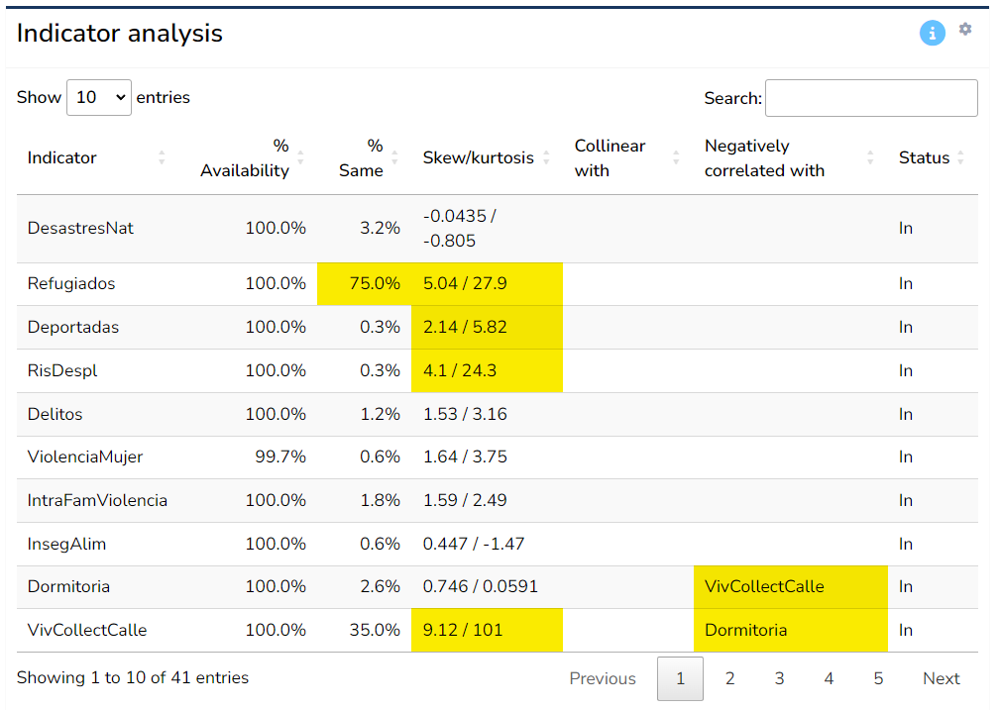
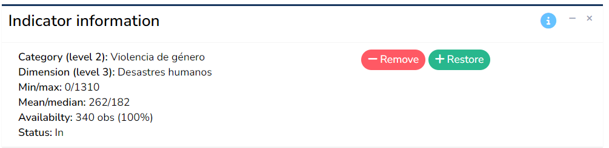
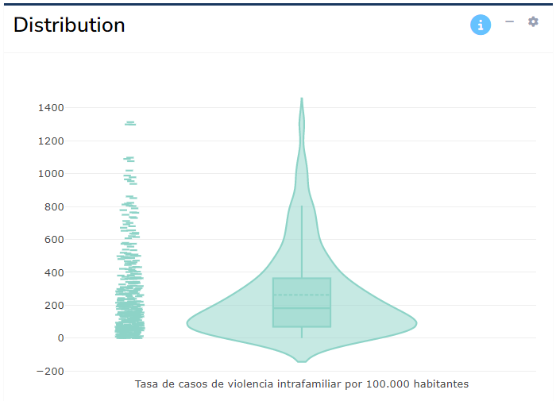
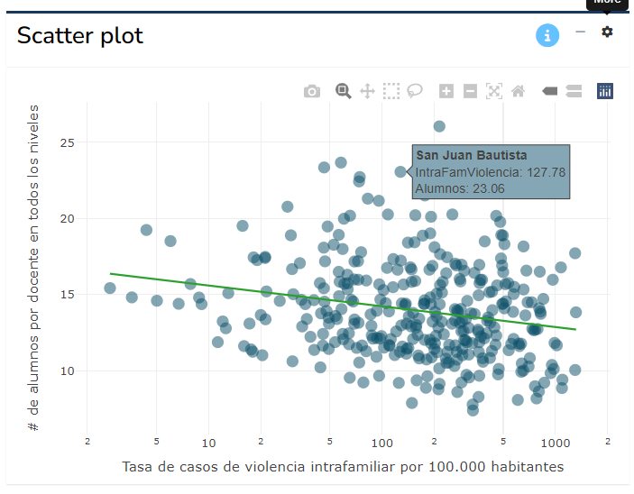

4 Indicator analysis
The indicator analysis tab allows you to explore your data in some depth, and identifies potential statistical issues with indicators. It also gives the option to remove indicators within the app, but you may also wish to alter your input data.
Note that this tab is completely optional and you may skip it if you wish.
4.1 Analysis table
The main output of this tab is the the analysis table, which gives one row for each indicator and in particular flags any potential statistical issues by highlighting cells in yellow.

Here, “statistical issues” refers to problems identified automatically for each indicator. These should be treated as flags, over which you have the final decision whether they constitute a real problem or not. Here, each column is explained in more detail.
The first column, % availability refers to the percentage of data availability for that indicator. This is in a way the most important column. Here, if an indicator has less than 66% data availability, it will be flagged (highlighted yellow). Consider that 66% is a subjective threshold, although it is often used in the context of composite indicators. If the indicator has less, it could potentially be considered for removal unless it is very important to keep it. Indicators with very low data availability (less than 50%) should ideally not be included unless there is a very strong reason to do so.
The % same column reports the number of data points that share a single common value. For example, 50% of points are zero, this will be 50%. It is flagged if greater than 50%. The idea here is to point to indicators which have a low power in discriminating between Admin 2 regions - if most of the indicator values are the same, the indicator is arguably not very useful.
The Skew/kurtosis column gives the skewness and kurtosis values for each indicator - these are used as simple indicators of outliers: if an indicator has absolute skewness > 2 and kurtosis > 3.5 it is flagged. Outliers can be a problem in the aggregation step: they result in the scale of the indicator being dominated by some few outlying values. Note however that outliers are automatically treated when calculating the results - see Chapter 5.
The next two columns, Collinear with and Negatively correlated with give details of any indicators with which the indicators is collinear with (defined as correlation > 0.9), or negatively correlated with (defined as correlation < -0.4), within the same aggregation group at level 2. Collinearity between indicators can point to double counting, where effectively the same information is present in two indicators. Negative correlations can cause problems in aggregation, because high values of one indicator can cancel out low values of the other. It is recommended to check any flagged issues here using the scatter plot tool (described below). Note that the type of correlation used is Spearman rank correlation, which is less sensitive to outliers and skewed distributions.
Finally, the Status column reports whether the indicator is currently included or excluded (by default all indicators are included). Removal of indicators is explained in the next section.
Altogether, the table aims to highlight at a glance any possible statistical issues with indicators. Keep in mind that indicators are never “perfect”, and there will likely be various issues flagged in your data set. Of the criteria in the table, the data availability is probably the most important - indicators with low availability can add little, and in the worst case be misleading. The others can be considered as “small flags”, but if an indicator has multiple flags, it could be examined more closely to see whether it is really worth including it or not.
4.2 Indicator information

The indicator information box reports information about the indicator currently selected in the analysis table. This includes the parent groups which the indicator belongs to, its maximum and minimum values, mean and median, and its data availability. It is worth checking these numbers to make sure they agree with the expected definition of the indicator. For example, an indicator which is a percentage should generally have values in the range 0-100, but certainly not negative. This can be a simple way to spot any errors in compiling the indicator data.
Finally, this box also includes the option to remove the selected indicator by clicking the “Remove” button, and to restore any removed indicators with the “Restore” button. When an indicator is removed, it is not included in the calculation of the index scores on the following tabs, but the data is still retained in the app so it can easily be replaced.
Indicators can of course also be added and removed in your input data spreadsheet, and this is probably the best place to make heavy modifications. The in-app feature may be more useful for quick “what if” experiments.
4.3 Distribution

The distribution plot shows the statistical distribution of the indicator selected in the analysis table. The intention is to show visually how each indicator might be skewed, or contain outliers. This can also be useful to spot errors, e.g. incorrect data points. Click on the “gear” icon in the top right corner of the box to toggle between a histogram and violin plot.
Again, visual inspection of each indicator is highly recommended to double check that the data values follow the kind of distributions and ranges you would expect.
4.4 Scatter plot

The scatter plot allows to plot any indicator against any other. The x-axis indicator is selected by selecting an row in the analysis table. The y-axis indicator is controlled by clicking the “gear” icon in the top right and using the drop-down menu. Here you can also optionally add a linear trend line and toggle log axes (the latter option useful for skewed indicators). Hovering over points reveals details of the region and values.
Scatter plots are useful to assess the relationships between indicators, but can also identify outliers and help spot any errors. In the analysis table, where indicators are flagged as being collinear or negatively correlated, it is recommended to check them here to see if the relationships reveal anything unusual.